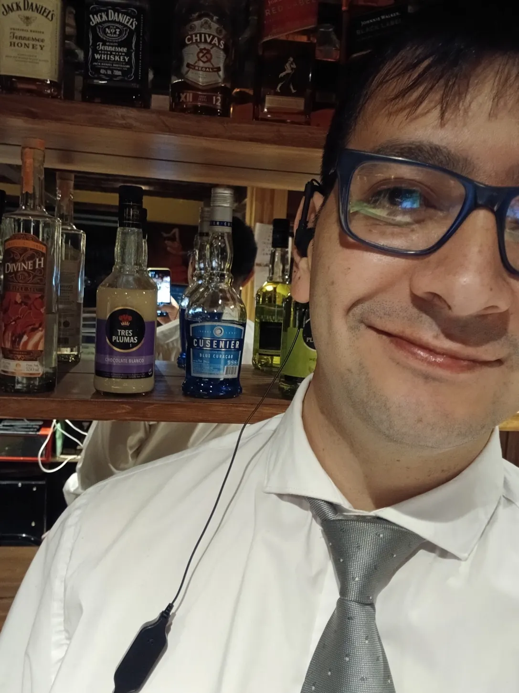
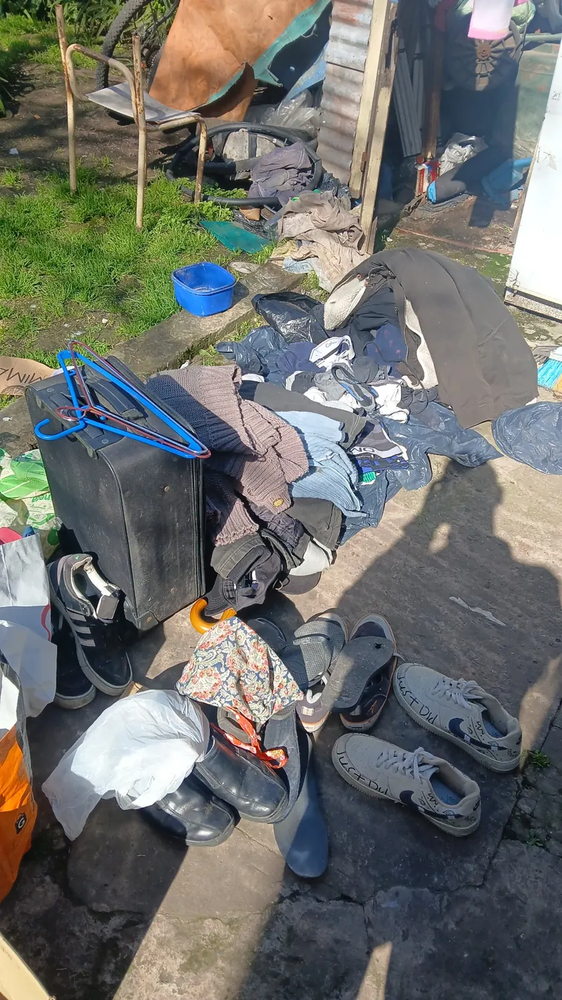
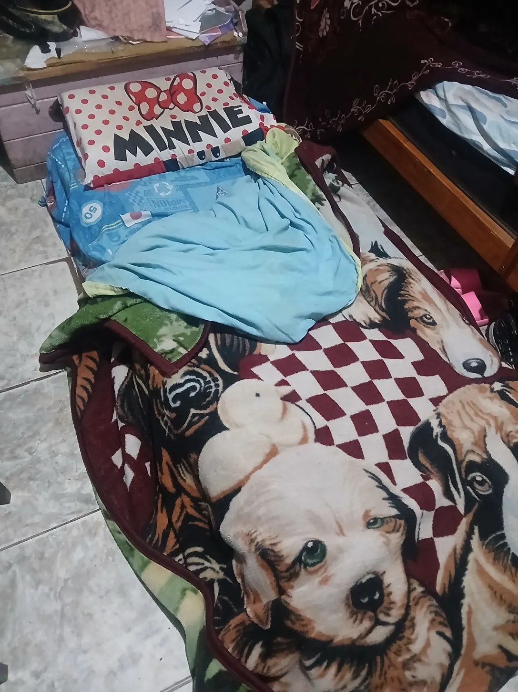
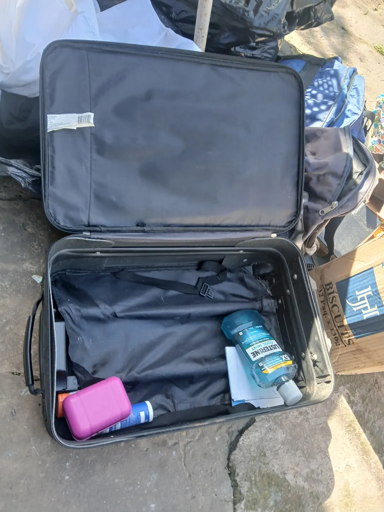
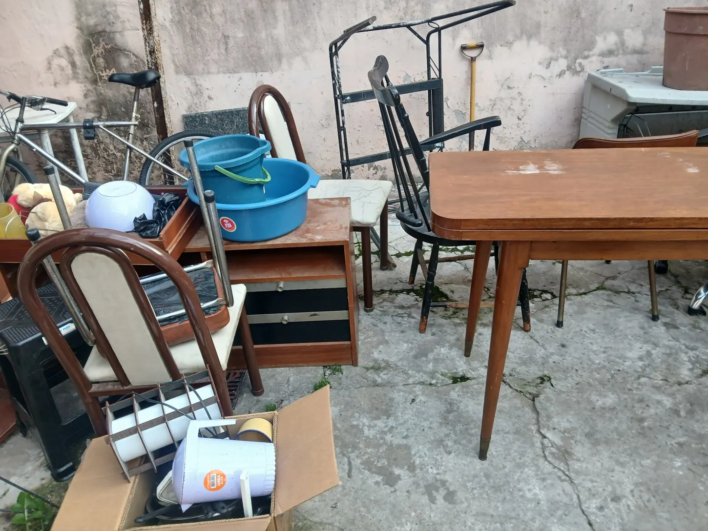
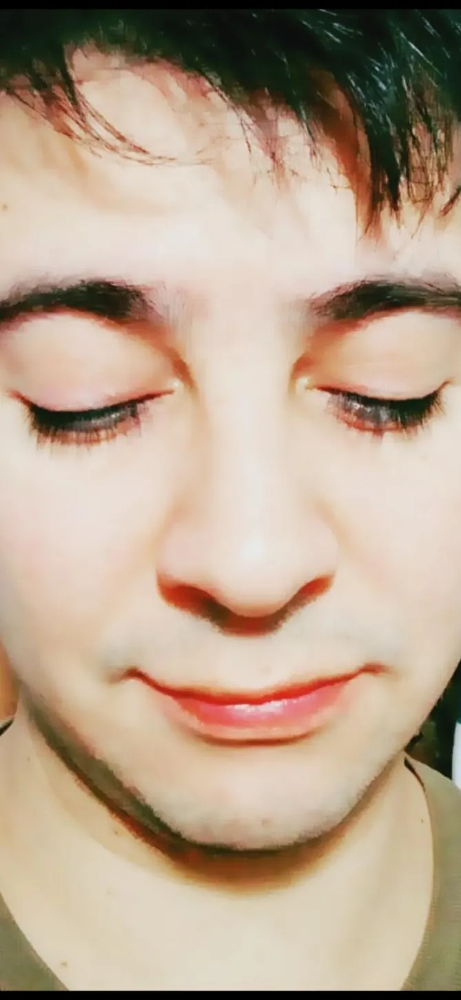
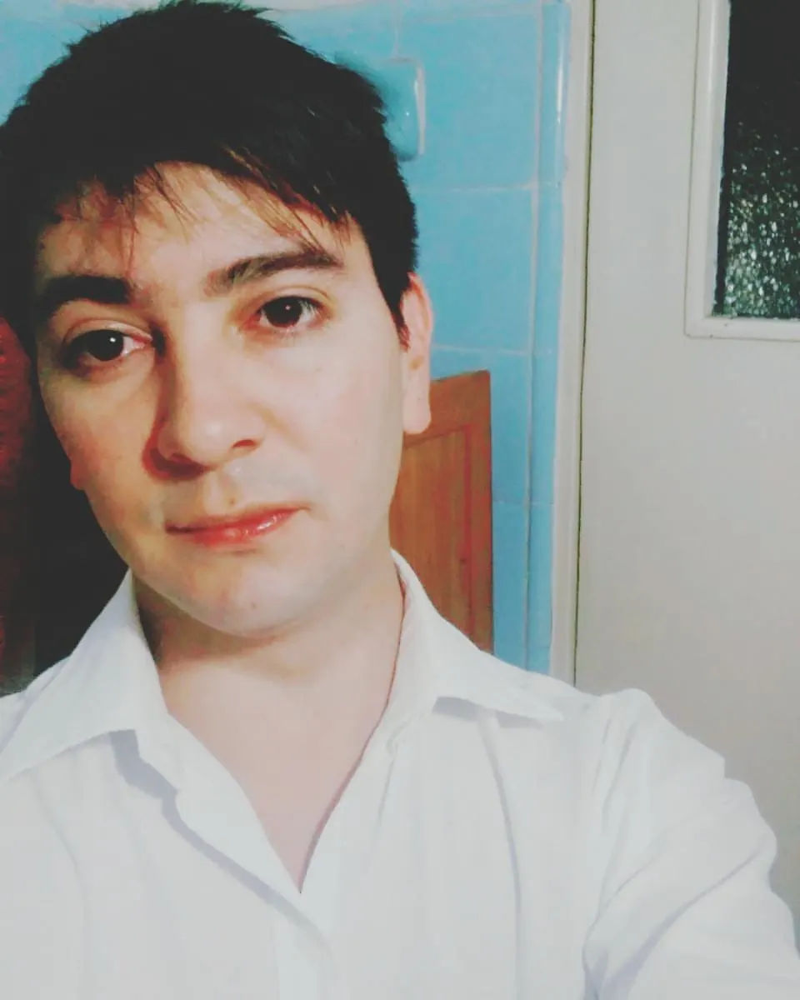
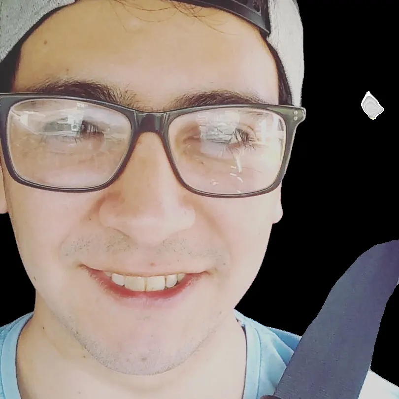

VIDEO / HISTORIA
La cruda realidad
Cuando te quedás sin muchas de las cosas que conocías, aparece una pregunta: ¿cómo empezar de nuevo?
La mía tuvo cambios que nunca imaginé. Hoy la estoy contando mientras intento construir lo que viene.
Un espacio para conocer una historia real, participar en juegos gratuitos y, si te nace, acompañar este nuevo comienzo.

Antes de las valijas, los bolsos y los cambios, había una vida. La historia que ves acá no está actuada: son momentos de mi recorrido, contados con mis palabras y mis propias imágenes.
 OTROS MOMENTOS
OTROS MOMENTOSAntes de esta etapa también hubo momentos distintos: viajes, trabajo, lugares y recuerdos. No quiero que una dificultad borre todo lo que fui.
Las imágenes no están ordenadas por fecha exacta: están agrupadas por la etapa que representan.








Un día tenés tus cosas. Otro día las tenés en bolsas. Lo que intento contar no es solamente lo que perdí, sino lo que todavía quiero construir.
— Una historia en primera personaEstos videos forman parte de mi historia. Prefiero mostrarlos como son, sin convertirlos en un espectáculo.
Cuando te quedás sin muchas de las cosas que conocías, aparece una pregunta: ¿cómo empezar de nuevo?
Vine a Villa La Angostura para trabajar, crecer y hacer cosas grandes. El camino cambió, pero sigo intentando.
No tenés que registrarte, pagar ni colaborar para jugar. Son desafíos gratuitos para desconectar un rato, pensar y compartir.
Elegí lo que más te representa. No hay respuestas correctas: cada persona llega hasta acá por un motivo distinto.
Encontrá las seis parejas. Un desafío breve para entrenar la atención.
Intentos: 0 · Parejas: 0/6
Elegí un paso en cada columna y descubrí qué mensaje te llevás hoy.


Vine a Villa La Angostura buscando trabajar, crecer y hacer cosas grandes. Todavía estoy aprendiendo, creando proyectos y buscando oportunidades.
Este espacio nace para compartir ese camino, escuchar otras historias y demostrar que no todo tiene que estar resuelto para empezar.
Quiero ser parte ↗Si esta historia o esta experiencia te movió algo, podés acompañarme con el aporte que quieras. También ayuda compartirla. No hay montos obligatorios, niveles ni beneficios por donar.
Alias de la cuenta del titular Cayetano Raúl Benítez.
Si estás fuera de Argentina o preferís otra alternativa, podés utilizar este enlace.
Ir a PayPal ↗El servicio puede aplicar sus propias condiciones y comisiones.Si querés, ayudame a que más personas conozcan la historia y puedan jugar.
Esta forma de apoyar también cuenta, y es totalmente gratuita.Los aportes son voluntarios y no están relacionados con los juegos. No se muestran cifras de recaudación que no hayan sido conciliadas. Esta página no ofrece inversiones, participaciones societarias ni premios.
No necesitás hacer algo enorme para ser parte de algo grande.
Volver al comienzo ↑